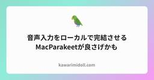
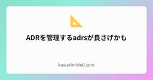
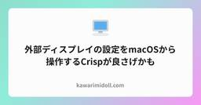

kawarimidoll.com
https://kawarimidoll.com/
first of all, kawarimidoll
フィード

音声入力をローカルで完結させるMacParakeetが良さげかも
kawarimidoll.com
macOS上で完全ローカルに動作する音声入力・文字起こしアプリMacParakeetの紹介です。
15時間前
Rust製の高速MarkdownリンターMadoが良さげかも 3
3
kawarimidoll.com
Rust製でGitHub Actionsでも使える高速MarkdownリンターMadoの紹介です。
15時間前
複数のBluetoothデバイスで音声を共有するPairPodsが良さげかも
kawarimidoll.com
Macの音声を複数のBluetoothデバイスへ同時出力するPairPodsの紹介です。
3日前

ADRを管理するadrsが良さげかも 52
kawarimidoll.com
Architecture Decision Records（ADR）を管理するRust製CLIツールadrsの紹介です。
5日前
地球儀キーの挙動を改善するbetterglobekeyが良さげかも
kawarimidoll.com
macOSの地球儀キーによる入力ソースの切り替えを改善するbetterglobekeyの紹介です。
6日前

外部ディスプレイの設定をmacOSから操作するCrispが良さげかも
kawarimidoll.com
外部ディスプレイのHiDPIスケーリングや輝度をメニューバーから操作できるCrispの紹介です。
8日前

DMGを開くだけでインストールまで済ませるEasyDMGが良さげかも
kawarimidoll.com
DMGからアプリをインストールする一連の操作を自動で済ませてくれるmacOSアプリEasyDMGの紹介です。
9日前
ディスク使用量をツリーマップ表示するTUIのdiskbloomが良さげかも
kawarimidoll.com
ディスク使用量をパステル調のツリーマップで表示するTUIのdiskbloomの紹介です。
10日前
FinderにくっつくアドレスバーFinderCueが良さげかも
kawarimidoll.com
macOSのFinderにパスをコピペできるアドレスバーを追加するFinderCueの紹介です。
11日前
macネイティブなGitクライアントのChangesが良さげかも
kawarimidoll.com
Liquid GlassのmacOSネイティブなGit GUIクライアントChangesの紹介です。
11日前
Macの積載量を見張るMister Plimsollが良さげかも
kawarimidoll.com
Macのディスク容量を監視して通知してくれるメニューバーアプリMister Plimsollの紹介です。
13日前
AIエージェントの状態が見えるターミナルMux0が良さげかも
kawarimidoll.com
AIコーディングエージェントの稼働状況をサイドバーに表示するmacOS向けターミナルMux0の紹介です。
14日前
MarkdownのQuick Lookを増強するMarkdown Previewが良さげかも
kawarimidoll.com
macOSのQuick Lookに連携するMarkdown Previewの紹介です。
17日前
台本の読んでいるところを光らせるTextreamが良さげかも
kawarimidoll.com
話している箇所に合わせて原稿をハイライトするmacOS向けテレプロンプターTextreamの紹介です。
18日前
FirefoxをまるごとWebAssemblyで動かすfirefox-wasmが良さげかも
kawarimidoll.com
ブラウザ上でFirefoxを動かすfirefox-wasmの紹介です。
19日前
ノートをまとめてコピーできるMarkdownエディタmarka.mdが良さげかも
kawarimidoll.com
メモを集めて書いてAIに渡すMarkdownエディタmarka.mdの紹介です。
19日前
Macのノッチをライブアクティビティ化するSuperIslandが良さげかも
kawarimidoll.com
MacのノッチにiOS風のライブアクティビティを表示するアプリSuperIslandの紹介です。
21日前
開発サーバーにHTTPSドメインでアクセスできるslimが良さげかも
kawarimidoll.com
ローカル開発サーバーにHTTPSのドメインを割り当て、外への公開もできるCLIツールslimの紹介です。
22日前
Spacesをアニメーションなしで切り替えるSpace Rabbitが良さげかも
kawarimidoll.com
macOSのSpaces切り替えアニメーションを取り除くSpace Rabbitの紹介です。
22日前
マウスホイールでピンチズームできるScrollToZoomが良さげかも
kawarimidoll.com
スクロールをピンチイン・ピンチアウトのズーム操作に変えるmacOSアプリScrollToZoomの紹介です。
23日前
コードベースを対話的なナレッジグラフにするUnderstand-Anythingが良さげかも
kawarimidoll.com
コードベースを解析してインタラクティブなナレッジグラフに変換するツールUnderstand-Anythingの紹介です。
25日前
完全ローカルで音声入力文字起こしができるghost-pepperが良さげかも
kawarimidoll.com
オンデバイスの音声モデルで文字起こしを行うmacOSアプリghost-pepperの紹介です。
1ヶ月前
AIエージェントと連動するデスクトップペットClawd on Deskが良さげかも
kawarimidoll.com
Claude CodeなどのAIコーディングエージェントと連動するデスクトップペットClawd on Deskの紹介です。
1ヶ月前
Claude Code GUIのClarcが良さげかも
kawarimidoll.com
ターミナルを開かずにClaude Codeを使えるmacOS用デスクトップクライアントClarcの紹介です。
1ヶ月前
Redditのスレッドを実況できるTUIのoh-my-redditが良さげかも
kawarimidoll.com
Redditのスレッドをライブ更新しながらターミナルで読めるoh-my-redditの紹介。
1ヶ月前
手持ちの動画をmacOSの壁紙にするPhospheneが良さげかも
kawarimidoll.com
任意の動画ファイルをmacOSのデスクトップ・ロック画面の壁紙にできるPhospheneの紹介です。
1ヶ月前
AIエージェントワークステーションのCodexiaが良さげかも
kawarimidoll.com
Codex CLIとClaude Codeの作業用に多彩な機能が盛り込まれたCodexiaの紹介です。
1ヶ月前
Macのdockをウィジェットで拡張するDockspaceが良さげかも
kawarimidoll.com
Macのdockにウィジェットやアプリのまとめ機能を追加するアプリDockspaceの紹介です。
1ヶ月前
Claude Codeの使い方を分析して最適化するcclensが良さげかも
kawarimidoll.com
Claude Codeのセッションと設定を分析して無駄や改善点を見つけるCLIツールcclensの紹介です。
1ヶ月前
多様なAppleデバイスで動くエディタNeon Vision Editorが良さげかも
kawarimidoll.com
macOSからiOS・visionOSまで動くテキストエディタNeon Vision Editorの紹介です。
1ヶ月前
AIエージェントに仕様と記憶を持たせるTrellisが良さげかも
kawarimidoll.com
プロジェクトの仕様・タスク・メモリをリポジトリに残し、AIコーディングエージェントに引き継がせるTrellisの紹介です。
1ヶ月前
エージェントの登録手順をMarkdownで公開するauth.mdが良さげかも
kawarimidoll.com
AIエージェントがユーザーに代わってサービスへ登録するためのオープンプロトコルauth.mdの紹介です。
1ヶ月前
AIエージェントと同じ画面でMarkdownを編集できるOpenMarkdownが良さげかも
kawarimidoll.com
AIエージェントと同じ内容を見ながらファイルを編集できるMarkdownエディタOpenMarkdownの紹介です。
1ヶ月前
トークンを画像に変換して削減するpxpipeが良さげかも
kawarimidoll.com
Claude Codeなどの入力トークンを画像に変換して削減するローカルプロキシpxpipeの紹介です。
1ヶ月前
AIエージェントをドット絵オフィスで眺めるpixtuoidが良さげかも
kawarimidoll.com
AIコーディングエージェントがドット絵のオフィスで働くTUIのpixtuoidの紹介です。
1ヶ月前
アーキテクチャ図をコードで管理するStructurizrが良さげかも
kawarimidoll.com
単一のモデルから複数のアーキテクチャ図を生成するC4モデル公式実装Structurizrの紹介です。
1ヶ月前
TRPGの場面に応じた環境音セットのPocketBardが良さげかも
kawarimidoll.com
テーブルトークRPGのゲームマスター向けに、場面に応じて変化する環境音を鳴らすアプリPocketBardの紹介です。
1ヶ月前
ディスク使用量をツリーマップで一望できるGrandPerspectiveが良さげかも
kawarimidoll.com
ディスク使用量をツリーマップで可視化するmacOSアプリGrandPerspectiveの紹介です。
1ヶ月前
動物作画のための参考写真集サイトAnimal Photo Referencesが良さげかも
kawarimidoll.com
動物を描くアーティスト向けに、種類ごとの参考写真を無料で公開しているサイトAnimal Photo Referencesの紹介です。
1ヶ月前
AI稼働中にMacを寝かせないAdrafinilが良さげかも
kawarimidoll.com
AIコーディングエージェントが動いている間だけMacのスリープを阻止するアプリAdrafinilの紹介です。
1ヶ月前
AIに操作させて自分は監視できるブラウザVessel Browserが良さげかも
kawarimidoll.com
AIエージェントが実際にWebを操作し、その様子を監視・制御できるブラウザVessel Browserの紹介です。
2ヶ月前
AIエージェントの実行をノッチで確認するPing Islandが良さげかも
kawarimidoll.com
MacのノッチでAIコーディングエージェントのセッションを監視・操作するアプリPing Islandの紹介です。
2ヶ月前
ディスク使用量をサンバーストチャートで可視化するRadixが良さげかも
kawarimidoll.com
ディスク使用量をサンバーストチャートで可視化するmacOSネイティブアプリRadixの紹介です。
2ヶ月前
Markdownのlanguage server・formatter・linterを一手に担うPanacheが良さげかも
kawarimidoll.com
Markdown・Quarto・R Markdown向けのlanguage server兼formatter兼linterツールPanacheの紹介です。
2ヶ月前
ワークスペースでセッションを管理するターミナルfantasttyが良さげかも
kawarimidoll.com
ワークスペース中心のセッション管理とtmuxによる永続化を備えたmacOS用ターミナルfantasttyの紹介です。
2ヶ月前
AIエージェント実行に最適化されたWebターミナルwebtermが良さげかも
kawarimidoll.com
複数セッションをダッシュボードで一覧できるWebベースのターミナルwebtermの紹介です。
2ヶ月前
OCR検索もできるmac用クリップボード管理Cliporyが良さげかも
kawarimidoll.com
コピー履歴をOCR込みで検索できる、macOS向けのクリップボードマネージャCliporyの紹介です。
2ヶ月前
ローカル完結のAI文字起こしアプリTranscribeXが良さげかも
kawarimidoll.com
音声・動画をデバイス内だけでテキスト化するmacOS向けAI文字起こしアプリTranscribeXの紹介です。
2ヶ月前
AIエージェントをノッチから見守るOpen Islandが良さげかも
kawarimidoll.com
macのノッチからAIコーディングエージェントを監視・制御するアプリOpen Islandの紹介です。
2ヶ月前
コードをQuick Lookで色付き表示するPiqueが良さげかも
kawarimidoll.com
macOSのFinderでコードやスクリプトをシンタックスハイライト付きでプレビューするQuick Look拡張Piqueの紹介です。
2ヶ月前
AIでゼロから書き直された老舗MacエディタJedit-openが良さげかも
kawarimidoll.com
オープンソースとして生まれ変わった老舗のMac用日本語テキストエディタJeditの紹介です。
2ヶ月前
プロジェクト単位で整理できるMac用ターミナルMuxyが良さげかも
kawarimidoll.com
プロジェクトグループや縦タブでセッションを整理できるmacOS向けターミナルMuxyの紹介です。
2ヶ月前
Liquid GlassターミナルContermが良さげかも
kawarimidoll.com
Liquid GlassをフィーチャーしたmacOS専用のターミナルアプリContermの紹介です。
2ヶ月前
macOS音声入力アプリのFluidVoiceが良さげかも
kawarimidoll.com
ローカルAIで音声をテキスト化してあらゆるアプリに直接入力できるmacOSアプリFluidVoiceの紹介です。
2ヶ月前
Apple containerにDocker互換APIを被せるsocktainerが良さげかも
kawarimidoll.com
Apple純正コンテナにDocker互換のAPIを実装するsocktainerの紹介です。
2ヶ月前
xterm.js互換のghostty-webが良さげかも
kawarimidoll.com
Ghosttyをxterm.js互換APIでブラウザに提供するライブラリghostty-webの紹介です。
2ヶ月前
macOSの⌘+Tabを高機能化するBetterCmdTabが良さげかも
kawarimidoll.com
macOSの⌘+Tabを高機能なアプリスイッチャーに置き換えるBetterCmdTabの紹介です。
2ヶ月前
1000以上のサイトから動画を保存できるreclipが良さげかも
kawarimidoll.com
yt-dlpを操作し1000以上のサイトから動画・音声を保存できるWeb UIのreclipの紹介です。
2ヶ月前
Git GUI付きmacOS専用ターミナルアプリOpenOwlが良さげかも
kawarimidoll.com
Git GUIとエディタがついたmacOSネイティブターミナルアプリOpenOwlの紹介です。
2ヶ月前
AIコーディングエージェントを一括管理するADHDevが良さげかも
kawarimidoll.com
複数のAIコーディングエージェントのセッションをダッシュボードから管理できるADHDevの紹介です。
2ヶ月前
QuicksilverぽいモダンなMacランチャーTunaが良さげかも
kawarimidoll.com
QuicksilverにインスパイアされたmacOS専用ランチャーアプリTunaの紹介です。
2ヶ月前
macOS用メディアプレイヤーMac Classic Playerが良さげかも
kawarimidoll.com
キーボード操作できるミニマルなメディアプレイヤーMac Classic Playerの紹介です。
2ヶ月前
AIエージェントに最小限のコードだけ書かせるPonytailが良さげかも
kawarimidoll.com
AIコーディングエージェントの過剰実装を抑えてコード量を削るルールセットPonytailの紹介です。
2ヶ月前
AIエージェントを何日も自律実行できるMaestroが良さげかも
kawarimidoll.com
複数のAIコーディングエージェントを長時間自律実行・管理できるデスクトップアプリMaestroの紹介です。
3ヶ月前
DiffもUIもブラウザでレビューするcritが良さげかも
kawarimidoll.com
AIコーディングエージェントの計画書やコード変更にブラウザからコメントできるレビューツールcritの紹介です。
3ヶ月前
macOSのワークスペースを一瞬で切り替えるFlashSpaceが良さげかも
kawarimidoll.com
macOSのワークスペースをアニメーションなしで高速に切り替えるFlashSpaceの紹介です。
3ヶ月前
多様なAppleデバイスで動くターミナルrootshellが良さげかも
kawarimidoll.com
iPhone・iPad・Vision Pro・Macに対応した高機能ターミナルエミュレータrootshellの紹介です。
3ヶ月前
Markdownドキュメント群を渡り歩くClearanceが良さげかも
kawarimidoll.com
Markdownドキュメントを閲覧・編集できるmacOSネイティブアプリClearanceの紹介です。
3ヶ月前
記憶を持つAIアシスタントRowboatが良さげかも
kawarimidoll.com
メールやカレンダーからナレッジグラフを構築するローカルファーストのAIアシスタントRowboatの紹介です。
3ヶ月前
ターミナル表示の万能ツールボックスrich-cliが良さげかも
kawarimidoll.com
ターミナルでシンタックスハイライトやMarkdownレンダリングができるrich-cliの紹介です。
3ヶ月前
2ペインTUIのgit diffビューアdifferが良さげかも
kawarimidoll.com
ファイルリストと差分プレビューの2ペインでgit diffを閲覧できるTUIツールdifferの紹介です。
3ヶ月前
GitHub Actionsをローカルで検証・実行できるwrkflwが良さげかも
kawarimidoll.com
GitHub Actionsワークフローをローカルで検証・実行できるTUIのwrkflwの紹介です。
3ヶ月前
カラフルなモーダル系hexエディタのhexapodaが良さげかも
kawarimidoll.com
Helix風のセレクション優先モーダル操作を持つ、カラフルなターミナルhexエディタhexapodaの紹介です。
3ヶ月前
GitHub Actionsの実行結果を一覧するact3が良さげかも
kawarimidoll.com
GitHub Actionsの直近3回の実行結果をさっと確認できるCLIツールact3の紹介です。
3ヶ月前
無限キャンバスで開発できるMaestriが良さげかも
kawarimidoll.com
ターミナルセッションやブラウザを無限キャンバス上に描画するmacOSネイティブアプリMaestriの紹介です。
3ヶ月前
Docker管理TUIのdocker-dashが良さげかも
kawarimidoll.com
コンテナ・イメージ・ボリューム・ネットワークをターミナルから操作できるDocker管理TUIのdocker-dashの紹介です。
3ヶ月前
ブラウザにくっつくブックマーク管理サイドバーarcmarkが良さげかも
kawarimidoll.com
ブラウザの追加サイドバーのように動くmacOS向けブックマーク管理アプリarcmarkの紹介です。
3ヶ月前
TS/JSコードベース解析ツールのFallowが良さげかも
kawarimidoll.com
TypeScript / JavaScript向けのRust製コードベース分析ツールFallowの紹介です。
3ヶ月前
空撮画像で名前を書けるYour Name in Landsatが良さげかも
kawarimidoll.com
入力した文字列を地球の衛星画像で表現してくれるNASAの体験サイトYour Name in Landsatの紹介です。
3ヶ月前
Homebrew互換の高速パッケージマネージャzerobrewが良さげかも
kawarimidoll.com
Homebrewのエコシステムを再利用しつつ5〜20倍の高速インストールを謳うRust製パッケージマネージャzerobrewの紹介です。
3ヶ月前
macOS TahoeにLaunchpadを取り戻すAppGridが良さげかも
kawarimidoll.com
macOS 26 Tahoeで廃止されたLaunchpadを復活させるアプリランチャーAppGridの紹介です。
3ヶ月前
AI開発ワークスペースFactory Floorが良さげかも
kawarimidoll.com
Git worktreeとClaude Codeを前提にしたAI開発ワークスペースFactory Floorの紹介です。
3ヶ月前
Time Machineの状態をメニューバーで確認できるTimeMachineStatusが良さげかも
kawarimidoll.com
macOSのTime Machineバックアップの詳細な状態をメニューバーから確認・操作できるTimeMachineStatusの紹介です。
3ヶ月前
GitHubダッシュボードTUI octoscopeが良さげかも
kawarimidoll.com
プロフィール・リポジトリ・PR・Issueをライブ表示するGo製GitHubダッシュボードTUI octoscopeの紹介です。
4ヶ月前
複数AIエージェントを並列管理するTUI amuxが良さげかも
kawarimidoll.com
複数のAIコーディングエージェントをgit worktreeで並列管理するTUIツールamuxの紹介です。
4ヶ月前
メカニカルキーボードの聴き比べサイトThe Listening Museumが良さげかも
kawarimidoll.com
メカニカルキースイッチの音をブラウザで聴き比べできるThe Listening Museumの紹介です。
4ヶ月前
RustコードをTUIで解析するRustlensが良さげかも
kawarimidoll.com
Rustプロジェクトの関数・構造体・トレイトをTUIで対話的にブラウズできるRustlensの紹介です。
4ヶ月前
シェルコマンドスニペットツールIntelliShellが良さげかも
kawarimidoll.com
コマンドテンプレートの保存・検索・変数展開でシェル操作を効率化するIntelliShellの紹介です。
4ヶ月前
macOS用キーボード駆動ファイルマネージャfindrが良さげかも
kawarimidoll.com
Vimキーバインドで操作するmacOSネイティブのキーボード駆動型ファイルマネージャfindrの紹介です。
4ヶ月前
Claude Codeのセッションを可視化するclaude-devtoolsが良さげかも
kawarimidoll.com
Claude Codeのセッションログから実行内容を再構築して可視化するデスクトップアプリclaude-devtoolsの紹介です。
4ヶ月前
ターミナル録画をアニメーションSVGにするTermSVGが良さげかも
kawarimidoll.com
ターミナルセッションを録画してアニメーションSVGとして出力できるTermSVGの紹介です。
4ヶ月前
GitネイティブなコラボレーションプラットフォームGitSocialが良さげかも
kawarimidoll.com
Issue、PRなどの機能をgitリポジトリ内に直接保存する分散型コラボレーションプラットフォームGitSocialの紹介です。
4ヶ月前
WebページをきれいにMarkdown化するDefuddleが良さげかも
kawarimidoll.com
Webページからメインコンテンツを抽出してMarkdown化するライブラリDefuddleの紹介です。
4ヶ月前
InkをブラウザでレンダリングできるInk Webが良さげかも
kawarimidoll.com
React製TUIライブラリInkをブラウザのxterm.js上で動かすInk Webの紹介です。
4ヶ月前
AIエージェントをサンドボックスで走らせるSandVaultが良さげかも
kawarimidoll.com
AIエージェントをmacOSのサンドボックスで安全に実行するSandVaultの紹介です。
4ヶ月前
クロスプラットフォームなdotfilesエコシステムDorothyが良さげかも
kawarimidoll.com
マルチシェル・マルチOS対応のdotfilesエコシステムDorothyの紹介です。
4ヶ月前
Arc風サイドバーをどのブラウザでも使えるSupaSidebarが良さげかも
kawarimidoll.com
Arcブラウザのサイドバー機能をあらゆるブラウザで使えるmacOSアプリSupaSidebarの紹介です。
5ヶ月前
macOS向け軽量IDEのNotepad.exeが良さげかも
kawarimidoll.com
Swift, Python, JavaScriptに対応したmacOS向け軽量IDEのNotepad.exeの紹介です。
5ヶ月前
構文認識でGitコンフリクトを自動解決するMergirafが良さげかも
kawarimidoll.com
プログラミング言語の構文を理解してGitコンフリクトを自動解決するツールMergirafの紹介です。
5ヶ月前
macOSにWindows風のウィンドウプレビューを追加するDockDoorが良さげかも
kawarimidoll.com
Dockアイコンのホバーでウィンドウプレビューを表示できるツールDockDoorの紹介です。
5ヶ月前
Apple IntelligenceをCLIから使えるapfelが良さげかも
kawarimidoll.com
Mac内蔵のApple Intelligence LLMをCLIとHTTPサーバーから使えるapfelの紹介です。
5ヶ月前
Apple Music自動起動を防ぐMusic Decoyが良さげかも
kawarimidoll.com
Playボタン押下時のApple Music自動起動を防ぐmacOSアプリMusic Decoyの紹介です。
5ヶ月前
AIエージェントのセッション管理ツールAgent of Empiresが良さげかも
kawarimidoll.com
複数AIエージェントをtmuxで管理するAgent of Empiresの紹介です。
5ヶ月前
コマンドをPTY内で実行するfakettyが良さげかも
kawarimidoll.com
コマンドを疑似端末内で実行してstdout/stderrを分離したままリダイレクトできるfakettyの紹介です。
5ヶ月前
Goのリポジトリを初期化するためのスクリプト
kawarimidoll.com
Go の勉強を開始していてプロジェクトの初期設定をサクッとつくるスクリプトというか bash alias を作りました。 ...
5年前
Flutterのリポジトリを初期化するためのスクリプト
kawarimidoll.com
Flutter 講座を進めるうえで何度も Flutter のプロジェクトを新しく作っていたので簡単に行えるようスクリプトを書きました。 ...
5年前
macのfinderでディレクトリのパスをコピーする方法
kawarimidoll.com
Windows のファイルエクスプローラではフォルダを表示したときに常に上の部分に現在のパスが表示されていますが、Mac の Finder ではそれが表示されていません。これを右クリックからコピーする方法を紹介します。 ...
5年前
「たった2日でマスターできるiPhoneアプリ開発集中講座」をやりました
kawarimidoll.com
「たった 2 日でマスターできる iPhone アプリ開発集中講座」という本を買って iPhone アプリ製作の勉強をしたので感想を書きます。 ...
5年前
VuePressでFont AwesomeとTailwind CSSを使うときの注意点
kawarimidoll.com
このサイトで使用しているテーマには Font Awesome のアイコンを使用しているのですが、Tailwind CSS と同時に有効化した際にスタイルが消えてしまったので対処法を残しておきます。 ...
5年前
[homebrew] Error: formulae require at least a URL
kawarimidoll.com
homebrew で初見のエラーと遭遇したのですが解決したので流れを残しておきます。 ...
5年前
ボルダリングをはじめる人が最初に買うべきもの
kawarimidoll.com
ジムで行うボルダリングは、ほぼ初期投資無し、施設利用料だけで始められるスポーツです。 しかし、お金を払っておいたほうが良いものもあります。 今回は僕の個人的な経験から、ボルダリングをやる上で買っておいたほうが良いものについて説明します。 ...
5年前
VuePressサイトにTwemojiを登録する
kawarimidoll.com
VuePressで絵文字をTwemojiに変換する方法を紹介します。markdown-itプラグインを使う方法と、enhanceAppでDOM全体をパースする方法の2パターンを解説します。
5年前
VuePressブログにGoatCounterを導入する
kawarimidoll.com
Web サイトのアクセス解析は Google Analytics(以下 GA)が主流です。しかし、GA はプライバシーの面で問題が指摘され、EU 域へページを公開する場合には GDPR の同意が必要となっています。 このブログには GA ではなく、OSS の計測ツール、GoatCounter を設定することにしたので、そのやり方を残しておきます。 ...
6年前
Slack+RSSで情報収集するやり方を紹介します
kawarimidoll.com
プログラミングの世界で生きていこうとなると情報収集が重要になります。 自分のやり方が唯一の正解だとは思いませんが、一例として、カワリミ人形の行っている情報収集法と、よく見るサイトを紹介します。 ...
6年前
PCの環境設定はdotfilesをGitHubで一元管理するのが楽
kawarimidoll.com
いろいろと PC を乗り換えたり、不具合対応のために PC を初期化したりしたとき、イチから環境を作り直すのはめんどくさいものです。 dotfiles を GitHub で管理すれば環境構築のコストが一気に少なくなります。 また、これにより環境を作り直すこと自体の心理的ハードルが下がるメリットもあります。 ...
6年前
kawarimidoll.com開発ロードマップ
kawarimidoll.com
本記事は当サイトの更新・改善に関するロードマップというかタスクリストです。 改修に応じ、随時項目を追加・更新していきます。 ...
6年前